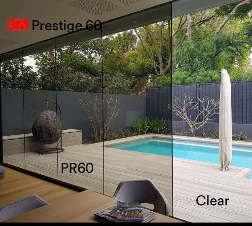
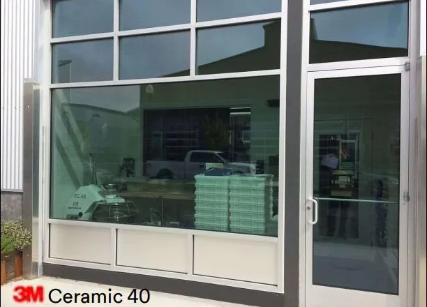
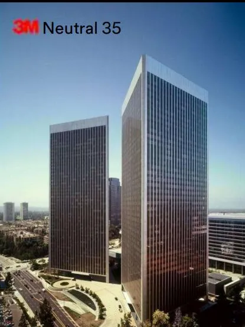
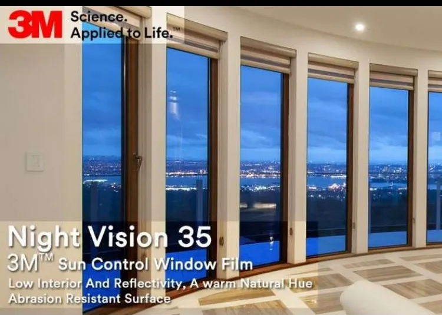
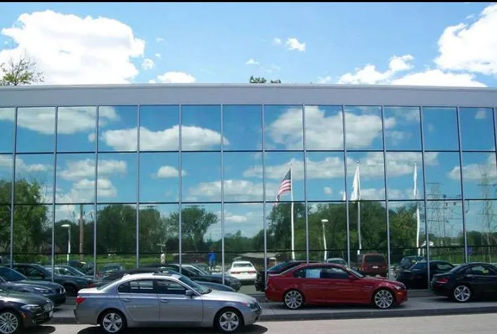
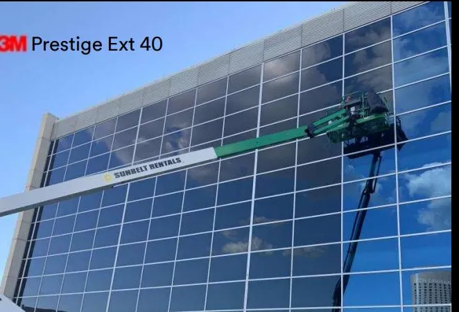

Película de Control Solar 3M para Edificios y Casas en Cancún
Instalamos películas de control solar 3M de alta performance en Cancún. Reduce el calor hasta un 80%, bloquea los rayos UV y ahorra significativamente en tu factura de aire acondicionado.
Solicitar Cotización Gratis
Beneficios de la Película de Control Solar
- ✦ Reduce hasta 80% el calor solar — La película bloquea la radiación infrarroja que calienta los espacios, haciendo que el interior sea hasta 10°C más fresco.
- ✦ Bloquea hasta 99% rayos UV — Protege tu piel, muebles, tapicería, pisos de madera y obras de arte contra la decoloración causada por la radiación ultravioleta.
- ✦ Ahorro en aire acondicionado — Al reducir la ganancia de calor, el sistema de AC trabaja menos. Los ahorros en electricidad pueden recuperar la inversión en poco tiempo.
- ✦ Protege muebles y pisos — Evita el desteñido prematuro de tapicería, cortinas, alfombras y pisos de madera causado por el sol intenso del Caribe.
- ✦ Aumenta privacidad — Los modelos espejados ofrecen privacidad desde el exterior durante el día sin sacrificar la visibilidad desde el interior.
- ✦ Mantiene visibilidad desde adentro — A diferencia de cortinas o persianas, la película deja pasar la luz natural y mantiene la vista al exterior sin bloquear el ambiente.
¿Cómo funciona la película de control solar?
Sin protección, la mayor parte de la energía del sol atraviesa el vidrio y calienta el interior. La película 3M refleja y absorbe esa energía antes de que entre, reduciendo la carga del aire acondicionado y las emisiones de CO₂.
Vidrio sin película
87%
de la energía solar entra a tu espacio
Solo 8% reflejada · 5% absorbida
Vidrio con película 3M
12%
de la energía solar entra a tu espacio
50% reflejada · 38% absorbida
Menos calor al interior → menos uso de aire acondicionado → ahorro directo en tu recibo de luz.
Líneas de Película 3M
Trabajamos con el portafolio de películas arquitectónicas 3M para elegir la opción exacta según tu vidrio, orientación y necesidad de privacidad.

3M Prestige
La línea premium sin metales. Nanotecnología multicapa que rechaza el calor manteniendo el vidrio prácticamente transparente. No interfiere con señales de celular ni WiFi. Ideal para residencias, hoteles y oficinas con vista.

3M Ceramic
Tecnología nanocerámica de color estable: no se desvanece con el tiempo. Gran reducción de calor conservando la apariencia natural del vidrio. Excelente para comercios y oficinas en Cancún.

3M Neutral
Tono gris neutro uniforme con el look corporativo clásico. Equilibrio entre entrada de luz natural, reducción de calor y privacidad. La opción probada para edificios de oficinas.

3M Night Vision
Baja reflectividad interior: de noche conservas la vista hacia el exterior sin efecto espejo. Tono cálido y superficie resistente a la abrasión. Perfecta para residencias y restaurantes con vista al mar o la laguna.

3M Silver P18
El clásico espejado para fachadas de cristal: máxima privacidad durante el día y el mayor rechazo de calor solar. De día se ve como espejo desde afuera, con visibilidad clara desde adentro.

3M Prestige Exterior
Se instala por el exterior del vidrio: la solución para ventanales de difícil acceso interior, dobles alturas y vidrios especiales. Mismo rendimiento Prestige, aplicado donde otros no llegan.
Preguntas Frecuentes
¿Cuánto reduce el calor la película de control solar?
Dependiendo del modelo y tipo de película, la reducción de calor solar puede ser del 40% al 80%. Los modelos de alto rendimiento como 3M Prestige, Ceramic o Silver ofrecen la mayor reducción. Para el clima tropical de Cancún, donde el sol es muy intenso, esto se traduce en una diferencia de temperatura notable y un ahorro considerable en electricidad.
¿Oscurece los vidrios?
Depende del modelo elegido. Existen películas casi transparentes como 3M Prestige 60 o 70 que filtran el calor y UV sin cambiar visualmente el vidrio, hasta modelos más oscuros o espejados como Silver P18 que también ofrecen privacidad. Te asesoramos para elegir el nivel de transmisión de luz que mejor se adapte a tus necesidades, espacio y preferencias estéticas.
¿Qué diferencia hay entre las líneas 3M Prestige, Ceramic y Silver?
Prestige es la línea premium sin metales: máxima claridad óptica y no interfiere con señales de celular o WiFi. Ceramic usa nanocerámica de color estable con excelente reducción de calor y apariencia natural del vidrio. Silver es espejada: máxima privacidad de día y el mayor rechazo de calor, ideal para fachadas de cristal. Te recomendamos la línea correcta según tu espacio y presupuesto.
¿La película 3M interfiere con la señal de celular o WiFi?
Las líneas sin metal como 3M Prestige y Ceramic no interfieren con señales de celular, WiFi, GPS ni radio. Las películas metalizadas tradicionales pueden atenuar ligeramente algunas señales; te orientamos según el uso del espacio para que no sacrifiques conectividad.
¿Cuánto dura la instalación?
La instalación en una habitación o espacio estándar puede completarse en unas pocas horas. Un edificio o proyecto grande puede requerir días de trabajo. Es un proceso limpio y no invasivo: no requiere obras ni interrumpir las actividades normales del espacio. La película queda completamente adherida en 24-48 horas.
¿Se puede instalar en cualquier tipo de vidrio?
La película de control solar es compatible con la mayoría de los vidrios: monolíticos, templados, laminados y termocontrol. Sin embargo, existen algunas restricciones en vidrios con características específicas o muy delgados. Hacemos una evaluación previa del vidrio para recomendar la película correcta. Para ventanales de difícil acceso interior existe la línea 3M Prestige Exterior, que se instala por fuera del vidrio.
¿Listo para cotizar el control solar?
Atendemos en Cancún y la Riviera Maya. Respuesta en menos de 24 horas, sin compromiso.
Solicitar Cotización Gratis →